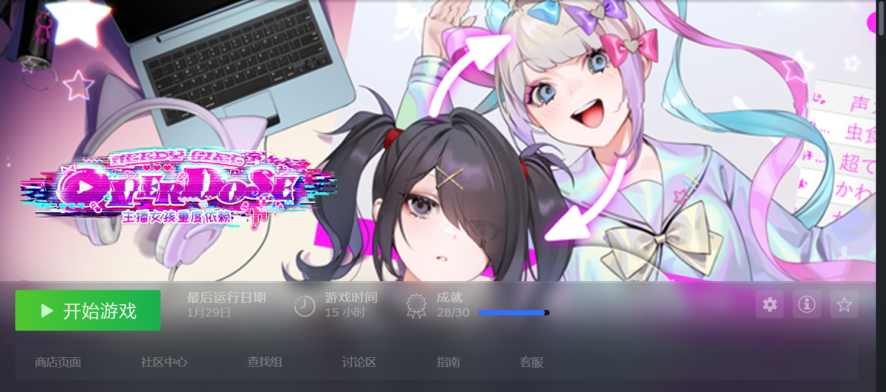

-
从现在开始还有三周二十一天……要好好计划起来。
反思了一下已经走过的道路，还是有迹可循。啊，现在话说不利索了吗。总之，第一学期能拿到3.8+的绩点，完完全全是好好选课+努力备考的结果；后来成绩大幅度下滑，不仅有心理的因素，也有胡乱选课、摸鱼偷懒、随意熬夜拖延的因素。比如，提前选了数理逻辑，中世纪思想，拉丁语，马哲上下……选课太少，退无可退……不能再这样随意下去。不能了哦。
要运用起自己的te来……要做好短期计划，用少量的时间完成机械化规划！
这个假期能做什么呢……到底是选科哲导还是宗导呢？宗导吧。整理了录音稿不是吗，提前看一遍吧。吴飞应该写过很多作品吧，是不是也能看一看？《卡拉马佐夫兄弟》，假期愿意看吗？不愿意的话，挑选什么书读呢？拉丁语21天可以背15课单词吧，相当于自学全书了！啊啊啊啊啊啊啊啊。还可以做什么呢？看知识论。
剩下的几门课……啊不想干了啊啊啊好想退学啊啊啊啊啊啊啊啊好想工作啊啊啊啊啊啊啊啊
-
写一个《主播女孩重度依赖》的repo吧。
先上截图防云。

（其实是满成就了，有一个成就不知道是什么bug没跳杯，还有一个是彩蛋懒得搞了）
————！！！重度剧透注意！！！————
看了一下游戏商提供的视频截图和介绍，果断在steam上入手了。
-
我打第一个档的时候还很懵逼，一边看糖糖直播一边删评论，手忙脚乱，大概在第十五六天的时候她的阴暗值清零了，然后糖糖结束了主播生涯，回归了现实生活。啊，打完这个结局我已经觉得很完美了！圆满……
在解锁全部结局前一共可以存三个档。我陪糖糖度过第一个30天的那个档，打完后再也没舍得动过。没有查任何攻略，我陪着她，认真看完了她的每一次直播，压力大了就让她看视频睡觉出去玩，阴暗值高了就陪她去医院，靠游戏实况和天使大讲堂达成了100w关注量，陪她回了老家，30天的时候她退出了互联网世界，达成了he结局。
打到这里已经觉得很满足了，但是四十块钱花都花了（），于是开始探索全成就。逐渐发现这个游戏扭曲的所在。
有一个成就要求糖糖用五次LSD，我看着她一次次瘫倒在椅子上眼睛失焦，然后一次次点击服用“魔法邮票”。那个时候我的心情已经不像第一个存档一样了，不再把糖糖寄予“人”的希望，只是单纯地想要知道会发生什么事情而已……
-
有一个成就要求把糖糖的压力值拉到80,100,120。第一次压力爆表的时候，糖糖会让“我”为她割腕，三刀哦三刀……第二次会失去控制，自动进行一次病态直播，在屏幕前尖叫：“啊啊啊啊啊啊啊啊啊啊啊啊啊啊啊啊——”如果在day24之前压力值没有减到80以下，从day24开始会完全失控。太超过了……这真的不是作者的恶趣味吗……糖糖会在镜头前崩坏，哭着说你们为什么要这么做啊，你们这些黑子是不是心理扭曲啊，但是得到的只有越来越多的黑子的弹幕……
评测区最高的一条是这么写的：
“中文翻译本地化好到一度怀疑是国产游戏。。。”
刚开始玩的时候没有觉得到这个程度吧，虽然翻译的确很流利……但是……
那些黑子的弹幕……太超过了……完完全全就是狗粉丝式的令人血压瞬间升高的中文……真是，本地化得彻底……
我自认打这个档的时候已经完完全全切断了和糖糖的情感联结了，但是观看这样的景象果然还是太超过了……血压++……
刚开始糖糖还有粉丝为她说话，夹杂在大量的恶意之中。第二天糖糖上播的时候还努力做出了笑容，想要像往常一样当大家的互联网小天使，但是很快就撑不下去了，在镜头前呕吐，然后无限的恶意再次刷屏，为超天酱说话的弹幕也越来越少。最后糖糖变成了“黑子的玩具”，就是这样。
平时受到大家的赞美，万人追捧，但是一旦流露出悲伤、愤怒，一旦显示出些许的软弱，就会被互联网上无处不在的恶意盯上，紧紧缠绕，曾经的粉丝也纷纷离去。
没有人帮助她，没有人在意她，所有人都在看她的笑话。
糖糖，要坚强啊。
最高贵的也是最低贱的……此时此景，怎不让人想起浦浦，呜呜，我的浦浦，呜
-
最高で最低
高貴で下劣
素直だけれど反省しない
無邪気で根暗
優雅で卑しい
緩やかで鋭利
……
子供で大人
-
对着这样一个一看就是充满了作者对于地雷狂气主播等等手冲要素集大成的作品发表议论，一定脑子坏掉了吧！虽然这么想，但是我还是可以拥有暴露真心的勇气吧。
可以的吧。
……
糖糖，尼特女，地雷系，躁郁，早早就休学了，待在家里，只有男朋友陪着她，非常非常爱她的男朋友（？），非常非常依赖她的男朋友。脑子又笨，人又懒，只有脸蛋——非常好看！
但即使是这样的糖糖，也想要得到很多很多的关注和很多很多的钱！为了达成百万follower的目标，作为男朋友的玩家“我”，对糖糖下达指令吧！
这时游戏会有一组糖糖发来的消息：
“阿p你每天都要给我下很多很多的指示呀 我相信你哦
“只要是你说的 我什么都会听
”我相信阿p 我一定乖乖听话 所以你一定要把我打造成最棒的主播呀
“不然的话……不然的话 我可是会坏掉的”
玩家这时只能点击一个选项：
“或者 我可能会把你给搞坏的”
啊啊啊啊当玩的次数多了的时候，当对糖糖已经没有感情只想尝试各种各样的ne和be的时候，这样的选项超级有负罪感的啊！”我“就是在一次一次把糖糖搞坏啊！！！
-
玩的时候大家都是心知肚明的啊。一方想要很多很多认同、很多很多钱，一方想要“天使”带来的虚拟的救赎和美好，就是这样的交易关系啊。明面上说着“最喜欢大家了”，背地里和男友一次次上床；上播时开朗活泼治愈当电子除恶人，下播后阴湿自闭一次次崩溃，就是这样的关系。一旦破灭……一旦其中一方打破了幻象，就会陷落到万劫不复的境地中去。
-
游戏的数值做的特别好……
连播带来的收益是巨大的，如果能坚持播的话，不用半个月就能关注破百万了，但与此同时压力值的增长也是迅速的。因为压力值到80以上的时候糖糖会自动进行一次割腕把压力值降到80以下，所以可以狠心一直播下去，不断想着“播完今天就好了哦，明天一定让糖糖休息”，这样压榨着她。
-
问题在于这其中真的没有真心吗，一点点真心都没有吗，这个问题任谁也无法回答。做着“看直播”这样事情的人……被认为“最浪费时间的事情”的，自认为是宅宅的人，有没有哪怕一刻，真心希望获得救赎呢……
但在《主播女孩重度依赖》的世界里，任何一个具体的人都无法获得救赎，大家能做的只是在anonymous的背后希望虚拟的救赎而已。即使是超天酱也无法获得救赎。如果她有一刻流露出自己也需要得到救赎的虚弱来，就会被她绝望的观众们的恶意所吞噬……没有“人”可以获得救赎。
-
主播是比偶像还要低贱的事业，如果还可以被称为“事业”的话。已经没有那些伪装了——歌手，舞蹈家，演员；什么都不是。连闪闪发光的梦想都没有。凭空出世一个人设，陪在观众身边，一边和你聊天，一边让你窥探她的生活；只要在网上以这个人设活动，就没有任何隐私可言哦。彻底的服务业，出卖自己，获得following。